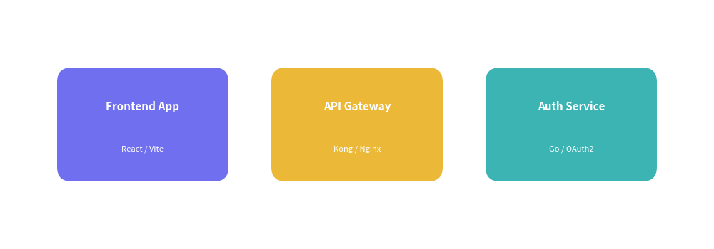
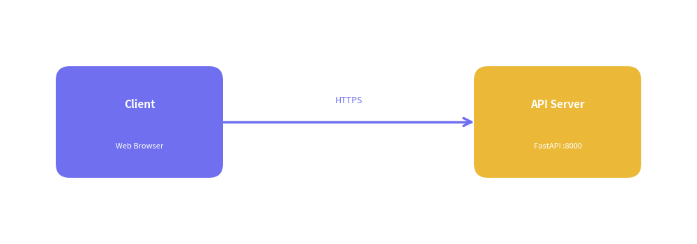
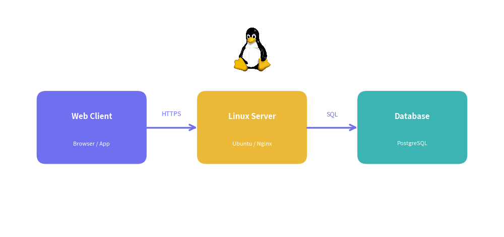

Reusable Utilities with utils.py
When building documentation sites, technical whitepapers, or batch illustration suites, you often need to draw consistent components across multiple pages and chapters: service nodes, database containers, network arrows with protocol labels, or company branding banners.
Instead of duplicating dozens of lines of coordinate calculations and styling boilerplate across your Markdown files, Drawlib provides utils.py—a dedicated project-level extension module for reusable drawing helpers and constants.
1. How utils.py Works
When you scaffold a project with drawlib init, a utils.py file is automatically placed at your project root:
my_docs/
├── docs_src/
│ ├── index.md
│ ├── navbar.md
│ ├── styles.py # Global styles, fonts, and themes (drawlib.styles)
│ ├── utils.py # Reusable drawing functions and constants (drawlib.utils)
│ ├── _assets/ # Static image assets (logos, icons)
│ ├── style.css
│ ├── template.html
│ └── build.sh
1.1. Automatic Discovery
When you run drawlib build (for HTML, Markdown, or PDF) or drawlib show, Drawlib automatically detects utils.py in your source directory.
All top-level functions, classes, and constants defined in utils.py are loaded directly into the drawlib.utils namespace.
1.2. Importing in Drawing Code
Inside any embedded drawlib code fence in your Markdown documents, or inside standalone Python illustration scripts, import your project helpers just like any other Drawlib module:
from drawlib.utils import connect, service_card
No relative path imports or sys.path modifications are required.
2. Common Implementation Patterns
Here are the most common and practical ways to leverage utils.py.
2.1. Standardized Service Cards (service_card)
Complex architectural diagrams often feature repeated service containers with titles, subtitles, and status indicators. Encapsulating this in a helper keeps diagrams clean and maintainable.
In utils.py:
from drawlib.shapes import rectangle
from drawlib.styles import Style, Styles
from drawlib.text import text
def service_card(
xy: tuple[float, float],
title: str,
subtitle: str = "",
width: float = 24.0,
height: float = 16.0,
style: Style = Styles.primary_flat,
) -> None:
"""Draw a standardized service card with a title and optional subtitle."""
x, y = xy
rectangle(xy, width=width, height=height, r=2.0, style=style)
if subtitle:
text((x, y + 2.5), title, style=Styles.white_bold.patch(text_size=11))
text((x, y - 3.5), subtitle, style=Styles.white.patch(text_size=8))
else:
text((x, y), title, style=Styles.white_bold)
In your Markdown document:

2.2. Labeled Connectors & Protocols (connect)
Manually computing midpoints to place protocol labels (such as HTTPS, gRPC, or SQL) on connection arrows is tedious and prone to misalignment. Delegating this to a connector function eliminates boilerplate.
In utils.py:
from typing import Literal
from drawlib.lines import line
from drawlib.styles import Style, Styles
from drawlib.text import text
def connect(
start: tuple[float, float],
end: tuple[float, float],
label: str = "",
arrowhead: Literal["", "->", "<-", "<->"] = "->",
style: Style = Styles.bold,
) -> None:
"""Draw a styled connecting line with an optional centered protocol label."""
line(start, end, arrowhead=arrowhead, style=style)
if label:
mid_x = (start[0] + end[0]) / 2
mid_y = (start[1] + end[1]) / 2
text((mid_x, mid_y + 3.0), label, style=Styles.primary.patch(text_size=9))
In your Markdown document:

2.3. Combining Helpers with Local Assets (_assets/)
Static branding images, cloud logos, and icons stored in _assets/ (e.g. _assets/linux.png) can be cleanly combined with utils.py components to build production-grade architectural illustrations:

2.4. Project Constants & Design Tokens
In addition to functions, utils.py is the ideal location to define project-wide design tokens and constants:
# utils.py
BRAND_PRIMARY = "#0055ff"
DEFAULT_CARD_WIDTH = 28.0
DEFAULT_CARD_HEIGHT = 18.0
DATABASE_PORT = 5432
In your diagrams:
from drawlib.utils import BRAND_PRIMARY, DEFAULT_CARD_WIDTH
3. CLI Configuration & Overrides
3.1. Default Lookup Behavior
By default, drawlib build and drawlib show search for a file named utils.py in the root of the source directory being built.
3.2. Custom Utilities Script (-u / --utils)
If you maintain multiple utility scripts (e.g., for different diagram domains or test fixtures), use the -u / --utils CLI flag:
# Build documentation using a specific utilities file
drawlib build html docs_src/ -o docs_html/ --utils custom_utils.py
# Inspect an individual diagram with custom utilities and coordinate grid
drawlib show docs_src/index.md 1 -u custom_utils.py -g
4. Best Practices for Writing utils.py
-
Provide Strong Type Annotations: Annotate arguments with standard Drawlib types (
Style,tuple[float, float],Literal["->", "<-", "<->", ""]). This ensures accurate autocomplete and type-checking in IDEs and AI agent workflows. -
Leverage Default Arguments with
Styles: Use predefined styles as defaults (e.g.,style: Style = Styles.primary_flat), allowing caller code to easily customize individual nodes with.patch()or alternative themes. -
Keep Helpers Pure & Declarative: Avoid managing global state inside helpers. Take coordinates
xyand dimensions explicitly, returningNone. -
Write Clear Google-Style Docstrings: Document the parameters and purpose of each macro component so that team members and AI coding assistants can discover and use them effortlessly.